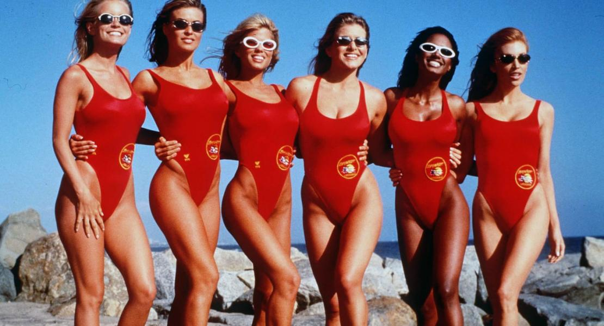
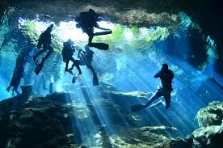
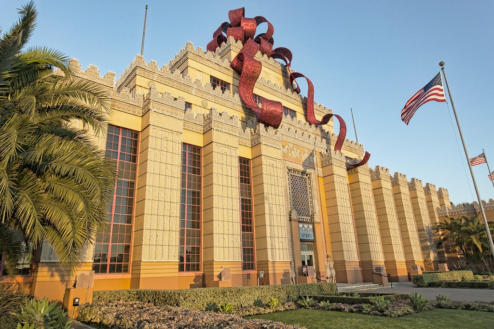
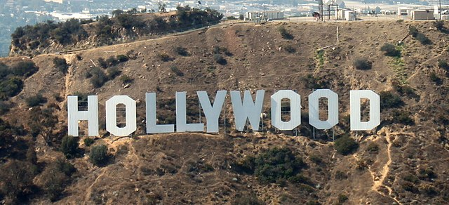
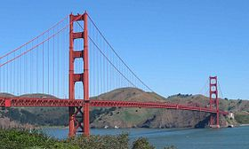

Бесконечные пляжи и снежные перевалы Сьерра-Невады, Голливуд, IT-гиганты Кремневой долины, рощи гигантских секвой и футуристические переплетения хайвеев — все это Калифорния, самый богатый штат США, уступающий по площади только Аляске и Техасу. Узкой полосой он протянулся вдоль побережья Тихого океана от штата Орегон до мексиканской границы.
Столица Калифорнии — Сакраменто, прячется в тени более именитых Сан-Франциско и Лос-Анджелеса. Через них проходит прибрежная Дорога № 1 протяженностью 1055 км, которую патриотичные американцы называют самой красивой на земле. На территории «Золотого штата» находятся первый Диснейленд и 8 национальных парков, в том числе сказочный Йосемити и негостеприимная Долина Смерти. Калифорния, к тому же, один из самых знаменитых и больших винодельческих регионов мира. Большинство ее винных хозяйств открыты для публичного посещения.
Регионы и курорты Калифорнии
Территория Калифорнии — 1240 км с юга на север и 400 км с востока на запад — включает несколько регионов, отличающихся по климату, ландшафту и природным красотам. Самая густонаселенная, солнечная и привлекательная часть штата — его тихоокеанское побережье от Сан-Диего до Сан-Франциско с жарким летом и мягкой зимой. Здесь расположены полный соблазнов Лос-Анджелес, богемные Беверли-Хиллз и Голливуд, известные всему миру протяженные песчаные пляжи и небольшие городки, населенные исключительно миллионерами.
Значительные пространства на юге покрыты пустыней Мохаве. Палящая дневная жара в сочетании с холодными ночами и редкими дождями почти лишили ее какой-либо растительности и наградили «инопланетными» пейзажами. В расположенном здесь национальном парке «Долина Смерти» находятся самая низкая точка США (86 м ниже уровня моря) и самое «горячее» место Северной Америки (зафиксированная температура +56,6 °С). Еще одна уникальная особенность долины — большие камни, которые способны перемещаться сами по себе.
Вдоль восточной границы Калифорнии на 750 км протянулся горный хребет Сьерра-Невада с заснеженными вершинами, достигающими высоты 4418 м, и национальным парком «Йосемити» с бурными речками, водопадами и гигантскими секвойями. Комфортная зимняя температура, обилие снега и солнечных дней, ухоженные склоны, современные подъемники и безупречный сервис сделали местные горнолыжные курорты одними из лучших в США.
В центральной части штата, между побережьем и горами Сьерра-Невада лежит Калифорнийская долина. Сочетание влажной зимы с теплым и сухим летом позволяет выращивать здесь овощи, фрукты и виноград, из которого производят знаменитые калифорнийские вина. Можно пролететь над долиной на воздушном шаре, а можно отправиться в винный тур, чтобы на месте продегустировать продукцию местных виноделов.
Как добраться до Калифорнии
Ближайший к Старому Свету калифорнийский аэропорт находится в Сакраменто. Но добраться до него не проще, чем до всех остальных. Из Москвы в Сакраменто выполняют рейсы «Эйр Франс», «Кей-Эл-Эм», «Бритиш Эйрвейс» и др. с двумя пересадками, время в пути — от 21 часа. Поэтому единственная разумная причина лететь в Сакраменто — его близость к лучшим горнолыжным курортам штата. Остальным удобнее и быстрее добираться прямым рейсом «Аэрофлота» Москва — Лос-Анджелес. Минимальная стоимость билета туда и обратно в зависимости от сезона и глубины бронирования — от 500 USD (февраль-март) до 1000 USD (июль), время в пути 12 часов. Цены на странице указаны на июль 2021 г.

В Лос-Анджелес и Сан-Франциско можно лететь с одной пересадкой через Париж, Амстердам или Лондон. Стоимость билета при этом снижается на 15-20 %, однако время в пути увеличивается до 18 часов. В другие крупные города Калифорнии — Сан-Диего и Сан-Хосе придется добираться с двумя пересадками и провести в дороге почти сутки.
Прямых рейсов из Санкт-Петербурга в Калифорнию нет. Самые дешевые билеты в Лос-Анджелес — у «Люфтганзы» с пересадкой во Франкфурте, но быстрее лететь «Аэрофлотом» через Москву (15,5 часов). Самые дешевые билеты в Сан-Франциско у «Кей-Эл-Эм» и «Турецких авиалиний», минимальное время полета — у «Люфтганзы».
Желающие в полной мере прочувствовать романтику путешествий по американским железным дорогам, могут отправиться в Калифорнию на поездах дальнего следования транспортной компании Amtrak. Они курсируют по маршрутам Чикаго — Сан-Франциско (66 часов), Чикаго — Лос-Анджелес (66 часов), Новый Орлеан — Лос-Анджелес (19 часов), Сиэтл — Сан-Франциско — Лос-Анджелес (35 часов).
Транспорт
Развитая сеть аэропортов позволяет перемещаться между городами Калифорнии на самолетах американских а/к «Юнайтед Эйрланс», «Дельта Эйрланс» и др. Перелет из Сан-Франциско в Лос-Анджелес занимает 1 час 15 минут, в Сан-Диего — 1,5 часа. С учетом времени на дорогу до аэропорта и обратно, процедуры посадки, высадки и получения багажа, а также благодаря более низкой стоимости билетов, с авиацией успешно конкурируют региональные поезда компании Amtrak, курсирующие вдоль тихоокеанского побережья. Их главные достоинства — удобные вагоны, интересные виды из окна и быстрый Wi-Fi.
Междугородние автобусы компаний Amtrak, Greyhound (оф. сайт на англ.) и др. не менее комфортны, а стоимость проезда на них еще ниже. Они весьма удобны даже для дальних поездок из Лос-Анджелеса в Лас-Вегас (450 км), к Гранд-Каньону (760 км) и в прочие места, где нет железных дорог. Билеты продаются в кассах на автостанциях, громоздкий багаж при посадке следует оставить рядом с автобусом — водитель сам погрузит его в багажное отделение.
Самый распространенный вид общественного транспорта в Калифорнии — автобусы, курсирующие по городским и пригородным маршрутам. Хорошо развито пригородное ж/д сообщение. Единственный в Калифорнии метрополитен есть в Лос-Анджелесе. Зато практически во всех крупных городах ходят скоростные трамваи. Так, Muni Metro в Сан-Франциско, представляет собой симбиоз обычных и скоростных трамваев, идущих под землей в деловом центре города.
"Поездки на такси в Калифорнии обойдется в 15-20 USD. Машину обычно заказывают по телефону, берут возле отеля или останавливают на улице рукой с поднятым вверх большим пальцем.
Аренда авто
Самый удобный способ передвижения по Калифорнии — автомобиль, на котором можно без проблем добраться до самых интересных мест штата и полюбоваться знаменитыми калифорнийскими пейзажами. А великолепные дороги, развитый придорожный сервис, низкая стоимость проката и бензина превращают поездку в настоящее удовольствие. Взять автомобиль в аренду можно в офисах локальных (LA Rent-a-Car и др.) или международных прокатных компаний (Avis, Hertz, Sixt и др.), которые есть в аэропортах и большинстве городов штата.
Несмотря на большое количество машин и напряженный трафик в начале и конце рабочего дня, вождение не представляет особой сложности. Разметка уличных парковок отличается от европейской — они обозначены выкрашенным в разные цвета бордюром. Зеленый допускает временную парковку в пределах определенного времени (обычно 30 минут). Синим отмечены места для инвалидов. Белый разрешает оставлять машину сколь угодно долго, а вот бордюры красного цвета всегда должны оставаться свободными. Парковку в центрах больших городов надо оплачивать через паркоматы — наличными или кредитной картой.
Отели Калифорнии
Количество различных вариантов проживания в Калифорнии — от роскошных отелей в центрах городов и популярных у туристов гостиниц средней ценовой категории до молодежных хостелов и незатейливых придорожных мотелей, намного превышает спрос.
Для тех, что потерял счет деньгам — отели 5* в облюбованном голливудскими небожителями районе Беверли-Хиллз, которые балуют своих постояльцев образцовым сервисом, великолепной кухней, большим выбором спа-процедур и прочими мирскими радостями. Стандартный двухместный номер здесь обойдется в 700-1300 USD, но это тот самый случай, когда понимаешь, что ни один доллар не потрачен напрасно.
Разумный компромисс между ценой и качеством — отели 2-3* по 100-200 USD за ночь в непосредственной близости от городских достопримечательностей. Бесплатный Wi-Fi есть во всех, а вот бассейн, ресторан и парковка могут отсутствовать. Выбор тех, кто путешествует на автомобиле — мотели, расположенные главным образом в пригородах и вдоль дорог. Несмотря на скромные цены — 80-100 USD, в них есть все необходимое для короткой остановки в пути — круглосуточный ресепшн, кондиционер, Wi-Fi, холодильник, бесплатная парковка, бассейн. Правда, мебель и сантехника могут быть «второй свежести».
Пляжи
Одна из главных достопримечательностей Калифорнии — цепочка роскошных пляжей с бело-золотистым песком, протянувшаяся от мексиканской границы до знаменитого городка миллионеров Санта-Барбара. Любителей безмятежного отдыха привлекают красивая природа, отлаженный как швейцарские часы сервис и царящий повсюду культ здорового образа жизни — явное влияние расположенного неподалеку Голливуда. Вот почему на пляже в Санта-Монике тысячи людей, молодых и не очень, наматывают километры на роликовых коньках по идущей вдоль берега специальной дорожке. Непременный атрибут соседнего пляжа Малибу — кинозвезды, уже состоявшиеся и только претендующие на это звание. Именно здесь несут дозор самые привлекательные в мире спасательницы в красных купальниках, мечтающие о славе Памелы Андерсон.
Туристы, ностальгирующие по Мэрилин Монро или Тони Кертису, не увидят здесь ничего нового. На террасе отеля, любуясь своими яхтами, по-прежнему сидят самые обыкновенные миллионеры, а вокруг них все так же вьются предприимчивые охотницы за состояниями.
Пляжи Сан-Франциско, за исключением расположенного в центре города пляжа Акватик-парк, где вообще не бывает волнения, и Бейкер-бич с видом на мост Золотые ворота и зоной для нудистов, из-за больших волн и сильного ветра малопригодны для купания. Зато они вполне подходят серфингистам и любителям пикников на свежем воздухе.

Пляжи можно условно разделить на 3 категории. Открытые для всех бесплатные городские, где за зонтик и пару лежаков придется отдать 10-30 USD. Отельные с собственными зонами отдыха у воды и бесплатным инвентарем для постояльцев. И, наконец, частные с великолепной инфраструктурой, вход на которые стоит от 40 USD.
Дайвинг
Популярное место дайвинга в Калифорнии — заповедный остров Санта-Каталина напротив Лос-Анджелеса, где снимали сериал «Морская охота». Его подводный мир буквально кишит разноцветными рыбками и омарами, прячущимися среди кораллов. Здесь можно встретить огромного морского окуня весом до 25 кг, увидеть безобидную леопардовую акулу или акулу-ангела с плоским телом. Во время нереста сардин сюда приплывают акулы моко, достигающие в длину 3 м. Для поклонников рэк-дайвинга — небольшое судно, лежащее на глубине 20 м.
Остров Анакапа в заливе Санта-Барбара имеет статус национального парка. Жак Ив Кусто считал его одним из лучших мест для дайвинга в зоне умеренного климата. Здесь наверняка увидишь морского льва, на вершинах подводных скал растут морские помидоры и гнездятся всевозможные моллюски, а в водорослях резвятся оранжевые рыбки-гарибальди.
Залив Монтерей в 2,5 часах езды к югу от Сан-Франциско — место обитания тюленей, морских выдр и черепах, а водоросли достигают такой высоты, что напоминают настоящий лес. К югу от Монтерея находятся дайв-сайты Пойнт-Лобос с мелководными рифами, густо усеянными морскими звездами, и Биг-Сюр с нетронутым цивилизацией подводным раем.
Горнолыжные курорты Калифорнии
Большинство горнолыжных курортов расположены к востоку от Сан-Франциско в горах Сьерра-Невада. За зиму здесь выпадает 10-15 м снега, благодаря чему сезон катания продолжается с середины ноября по начало мая. Присущий Калифорнии голливудский размах ощущается и на заснеженных склонах. Владельцы курортов не скупятся вкладывать деньги в развитие инфраструктуры, современные подъемники, сервис, поддержание трасс в идеальном состоянии, а также в клубы, рестораны и отели на любой вкус и кошелек. Единственное, что огорчает — цены на горнолыжный отдых в Калифорнии выше, чем в Европе.
Курорт Хэвенли на высокогорном озере Тахо (1900 м) превосходит все остальные по площади зоны катания (около 2000 га) и перепаду высот (1067 м). Прямо из центра фуникулер доставляет лыжников на горный склон с 30 подъемниками и 90 трассами различного уровня сложности.
С другой стороны озера расположен знаменитый курорт Скво-Вэлли, где проходила Зимняя Олимпиада 1960 г. Это несомненный лидер по количеству трасс — 170, высшая точка которых лежит на уровне 2760 м. В их числе великолепная трасса для ночного катания, 3 сноупарка и огромные целинные пространства для фрирайдеров.
Маммот — еще один курорт мирового класса. Благодаря уникальному микроклимату, здесь самый длинный в Северной Америке сезон катания — с начала октября до конца июня. Всего здесь 150 трасс, расположенных на высоте от 2424 м до 3369 м, самая длинная протянулась на 4,8 км. Из-за относительной близости к Лос-Анджелесу (5 часов на машине) по выходным его до отказа заполняют жители юга Калифорнии.
Шоппинг
Со времен фильма «Красотка» всем известно, что лучший шоппинг для людей с бескрайними возможностями в гламурном Беверли-Хиллз — на Родео-Драйв. Здесь сосредоточены самые престижные бренды, а многие магазины периодически закрываются на обслуживание только одного клиента.
Опытные шопоголики, минуя подобные места, держат курс прямиком в калифорнийские аутлеты, где вся одежда — от классики до ультрафэшн, продается с сумасшедшими скидками от 30 до 80 %. Помимо этого, два раза в год — с середины декабря по конец января и с середины июля по начало сентября, как и в обычных магазинах, в аутлетах проходят сезонные распродажи.
Похожий на древнюю вавилонскую крепость Citadel Outlets в Лос-Анджелесе (Citadel Drive, 100), скрывает за экзотическим фасадом более 130 магазинов от Armani Exchange и Hugo Boss до DKNY и Calvin Klein. Хороший выбор в сети аутлетов Premium Outlets, которых в Калифорнии более десятка. В их числе огромный Las Americas Premium Outlets в Сан-Диего на Camino de La Piz 4211.
Помимо аутлетов, существуют сети стоковых магазинов, такие как Ross Stores. Одежды в них много, но найти что-нибудь эксклюзивное практически невозможно. Большой выбор товаров в сетевых супемаркетах типа Wall-Mart. Место, где действительно есть все — самый большой торговый молл на всем Тихоокеанском побережье South Coast Plaza в местечке Коста-Меса.
Развлечения и достопримечательности
Стальные 15-метровые буквы HOLLYWOOD на склоне горы Ли встречают каждого, приезжающего в этот район Большого Лос-Анджелеса. Именно Голливуду город обязан своей всемирной славой. По традиции, премьеры многих фильмов «Фабрики грез» проходят в Китайском театре Граумана, перед которым известные актеры оставляют в бетоне отпечатки своих рук и ног. Раз в году вся гламурная «ярмарка тщеславия» собирается в театре «Долби» (бывшее название «Кодак») на вручение премии «Оскар». В остальное время наибольшая концентрация звезд наблюдается на легендарной Аллее славы — 2100-метровом участке Голливудского бульвара, где в тротуар вмонтировано более 2,5 тыс. розовых пятиконечных звезд с именами известных актеров, продюсеров, музыкантов и не очень реальных персонажей вроде Микки Мауса или семейки Симпсонов в полном составе. Полное погружение в волшебный мир кино гарантирует посещение парка развлечений киностудии Universal (оф.сайт на англ.), где можно побывать в «Доме ужаса», отправиться на встречу с динозаврами в «Парк Юрского периода» и испытать на себе «Месть мумии», после которой аттракционы «Форсаж» и «Терминатор-2» покажутся легким приключением.
Сан-Франциско — полный антипод Лос-Анджелеса. Его символ и одна из главных достопримечательностей Калифорнии — мост Золотые ворота, переброшенный над проливом на высоте 230 м. Это город бесчисленных холмов и крутых улиц, езда по которым — настоящие гонки по вертикали. Особый шик — проехать по ним на подножке канатного трамвая — своеобразного симбиоза обычного трамвая и фуникулера.
В самый южный город Калифорнии — Сан-Диего на границе с Мексикой, приезжают ради крупнейшего в мире зоопарка и Морского музея с авианосцем «Мидуэй» в качестве главного экспоната. На его фоне особенно эффектно смотрится скульптурная группа «Матрос, целующий медсестру», выполненная на сюжет знаменитой фотографии 1945 г., и имеющая еще одно двусмысленное название «Безоговорочная капитуляция».
Погода
На большей части штата климат средиземноморский, с дождливой зимой и сухим летом. Влияние океана снижает разброс температур, приводит к прохладному лету и теплой зиме. Из-за холодного Калифорнийского океанского течения вдоль берега часто стоит туман.
При продвижении вглубь территории климат становится более континентальным, с большим разбросом температур зимой и летом. Западные ветры с океана приносят влагу, и северная часть штата получает больше осадков, чем южная. На климат также влияют горы, которые не пропускают влажный воздух с океана далеко вглубь континента.